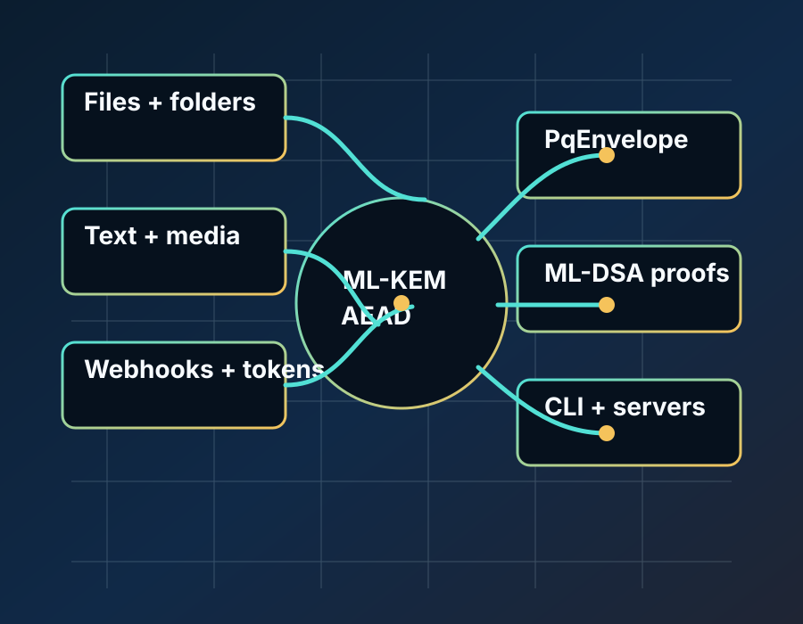

Local File Vault
developer machines, backup jobs, admin laptops, server batch jobs
encryptFileBytes, decryptFileBytes, PqEnvelope
Post-quantum application recipes for Dart
pqforge turns pqcrypto ML-KEM and ML-DSA primitives into application-ready envelopes, signatures, hybrid key agreement, wrapped key custody, and a local/server CLI.

Recipe catalog
developer machines, backup jobs, admin laptops, server batch jobs
encryptFileBytes, decryptFileBytes, PqEnvelope
case files, release bundles, evidence folders, internal archives
encryptFolderEntry, decryptFolderEntry
notes, secrets, prompts, policy snippets, short messages
sealText, openText, signText, verifyText
photos, audio, video, PDFs, campaign media, identity images
sealMedia, openMedia, signMedia, verifyMedia
contracts, reports, certificates, approvals, policy documents
signDocument, verifyDocument
payment callbacks, audit delivery, server-to-server events
signWebhook, verifyWebhook
API capabilities, admin actions, short-lived grants
issueToken, verifyToken
encrypted mail bodies, secure notifications, outbound archive mail
sealEmail, openEmail
public-sector records, patient records, registry payloads
encryptRecord, appendSignedLogEntry
release bundles, firmware, packages, configuration rollouts
signArtifact, verifyArtifact
Serverpod, API services, local agents, backend handshakes
PqForgeHybridKeyAgreement, PqForgeSecureSession
Universal CLI
Generate reusable public keys and wrapped secret keys, then encrypt or sign files, folders, text, and media without writing application code.
export PQFORGE_PASSPHRASE='from-your-secret-manager'
dart run pqforge keygen --profile maximum --key-id vault --out-dir keys --passphrase-env PQFORGE_PASSPHRASE
dart run pqforge encrypt-folder --recipient-public keys/vault.kem.public.json --in-dir ./records --out-dir ./records.pqf
dart run pqforge decrypt-folder --recipient-secret keys/vault.kem.secret.wrapped.json --passphrase-env PQFORGE_PASSPHRASE --in-dir ./records.pqf --out-dir ./records.open
dart run pqforge sign --kind media --signer-secret keys/vault.sign.secret.wrapped.json --passphrase-env PQFORGE_PASSPHRASE --in cover.png --mime-type image/png --out cover.sig.jsonUse cases
developer machines, backup jobs, admin laptops, server batch jobs
case files, release bundles, evidence folders, internal archives
notes, secrets, prompts, policy snippets, short messages
photos, audio, video, PDFs, campaign media, identity images
contracts, reports, certificates, approvals, policy documents
payment callbacks, audit delivery, server-to-server events
API capabilities, admin actions, short-lived grants
encrypted mail bodies, secure notifications, outbound archive mail
public-sector records, patient records, registry payloads
release bundles, firmware, packages, configuration rollouts
Serverpod, API services, local agents, backend handshakes
Profiles
ML-KEM-512 + ML-DSA-44
smaller demos, constrained payloads, and low-bandwidth signaturesML-KEM-768 + ML-DSA-65
default application and server profileML-KEM-1024 + ML-DSA-87
long-lived records, archives, media, and high-value artifactsDocumentation
Claim boundary
pqforge provides application composition around pqcrypto evidence. It does not claim CMVP/FIPS 140 validation, hard constant-time Dart behavior, or hard memory erasure. RC4 is rejected.
FAQ
In the directory passed to keygen --out-dir. Public keys are raw JSON. Secret keys are wrapped JSON when a passphrase source is supplied.
Yes when keygen is run with --passphrase-env, --passphrase-file, or --passphrase. Wrapped secrets use Argon2id plus AES-256-GCM.
No. RC4 is not PQC, not AEAD, and not safe for new systems.
No. AES encrypts; ML-DSA or hybrid signatures sign and verify.
Local file vaults, folder archives, server jobs, webhook systems, token issuers, document workflows, media archives, email payload protection, government/medical record systems, signed release pipelines, and hybrid server sessions.